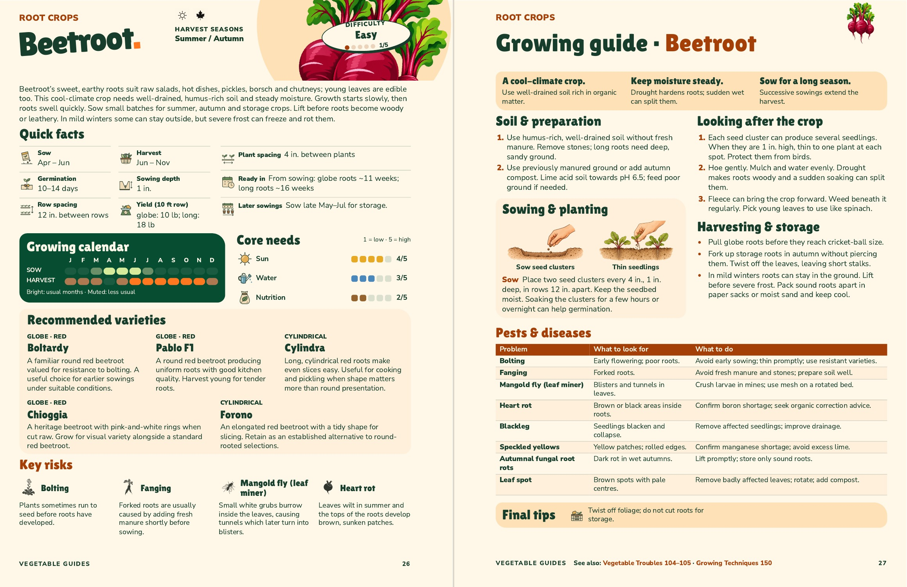
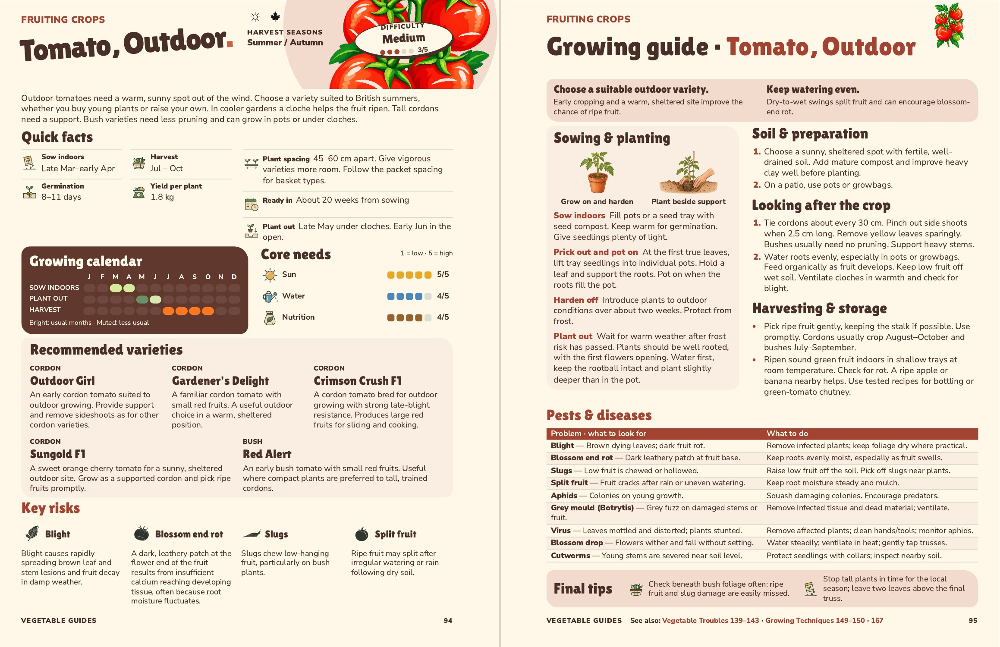

Three revised vegetable spreads
Beetroot, potato and outdoor tomato each fit on two facing pages. All 27 Pests & diseases entries are included. Select a crop below, or open the six-page PDF in your preferred units.
Beetroot · 26–27
The sowing panel shows the depth and spacing for seed clusters. Thinning now opens Looking after the crop, with the seedling height and the instruction to leave one plant at each spot. The later sowings fact has a succession icon.

View the metric spread
Compare with the earlier sample
Potato · 76–77
Chit and Plant tubers have separate icons and dates. Trench depth describes the hole the tuber goes into. Ground, mulch and container planting have their own instructions. Earthing up and frost protection sit in care.
View the metric spread
Compare with the earlier sample
Outdoor tomato · 94–95
Sow indoors and Plant out have matching calendar labels. Protected planting in late May is muted, with early June shown for open ground. Pricking out and potting on, hardening off, and planting out are separated. Tying and feeding sit in care.
View the metric spread
